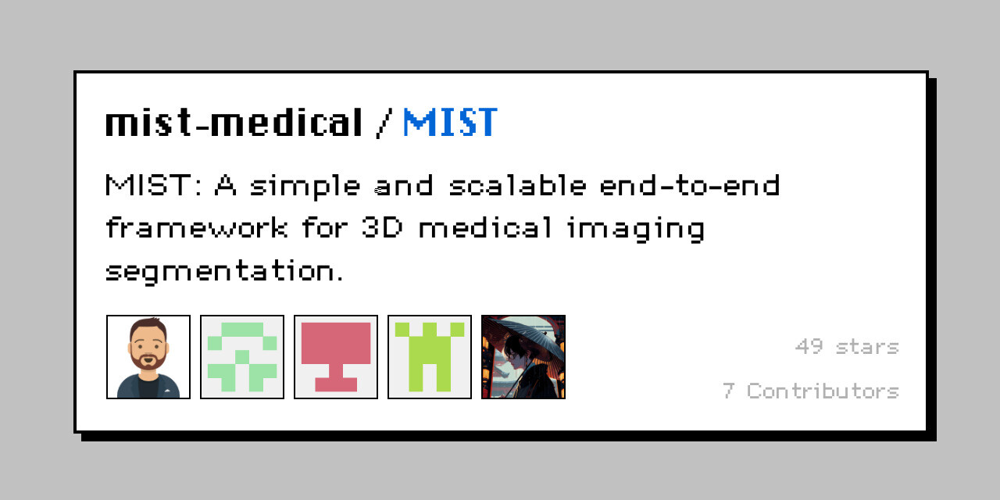

Medical Imaging Segmentation Toolkit (MIST)
A simple and scalable end-to-end framework for medical image segmentation. Handles various medical imaging data and is easily expandable for new architectures and loss functions.
Python
PyTorch
Open Source